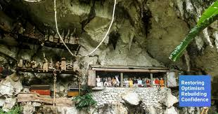

Londa
Pada dinding sebuah bukit yang curam, peti mati menggantung dari celah-celah di permukaan berbatu. Patung kayu sepanjang hari lengkap dengan pakaian, berdiri dalam barisan rapi di celah-celah yang dilubangi di tebing, sangat mirip dengan jendela dan balkon rumah. Ini mewakili orang mati yang dikuburkan di sana. Tidak jauh dari kuburan gantung ini menyembunyikan sebuah gua pemakaman berusia ratusan tahun. Situs ini sangat menarik dan membuat kagum banyak turis dari seluruh dunia. Pastikan Londa ada dalam daftar tempat untuk dikunjungi. Jika Anda belum pernah ke Londa, Anda tidak akan pernah tahu Toraja yang sebenarnya! Dari adat istiadat dan keyakinan dari jumlah suku di seluruh dunia, Suku Toraja sangat menghormati kematian dan penguburan dengan cara yang sangat berbeda. Bukan rahasia lagi bahwa orang Toraja, yaitu bangsawan, mengubur orang-orang yang mereka cintai dan kerabat mereka dengan salah satu cara paling unik di dunia! Serangkaian kostum tradisional yang sangat mahal untuk upacara penguburan (Rambu Solo) dan juga kuburan gua yang tinggi di dinding perbukitan dan tebing bisa dilihat di sini di Londa, Tana Toraja, di provinsi Sulawesi Selatan. Gua makam Londa adalah salah satu tujuan wisata yang lebih populer di Toraja. Tempat wisata Londa ditemukan di desa Sandan Uai, di Kecamatan Sanggalangi. Terletak sekitar 7 km. Sebelah selatan Kota Rantepao, pusat pariwisata dan akomodasi di Toraja. Karena itu, Londa mudah dijangkau dengan kendaraan umum seperti bemo, ojek, atau mobil sewaan. Untuk sampai ke gua makam Londa, seseorang harus turun beberapa tangga tapi sesaat sebelum Anda melakukannya, Anda akan didekati oleh seorang anggota masyarakat setempat yang menawarkan lentera untuk Anda sewa. Anda akan memerlukan cahaya untuk menemukan jalan masuk dan mengelilingi gua. Selain menyewa lentera, Anda juga bisa membawa senter Anda sendiri untuk menerangi jalan Anda, atau mintalah pemandu wisata Anda untuk menyediakannya untuk Anda. Pemandu Londa Tour khusus untuk gua makam biasanya tidak memiliki tarif tetap sehingga Anda bisa menawar dengan baik. Dari kejauhan, sisi tebing tampak subur & hijau dengan pepohonan hutan. Jika Anda jeli, Anda akan melihat peti mati berwarna-warni yang terselip di celah-celah dinding tebing. Di kaki tebing ini terletak sebuah gua yang digunakan sebagai makam. Saat Anda mendekati gua, Anda mungkin mendapati diri Anda terbungkus dalam nuansa mistisism, pada saat bersamaan, alam menyambut Anda dengan tanaman hijau liar dan udara segar yang sejuk. Di dinding tebing di sekitar gua, deretan patung kayu yang disebut Tau-taus bisa dilihat di tebing batu yang dipahat. Tau-tau adalah ukiran kayu berukir, sangat mirip dengan mayat yang dikuburkan disana. Biasanya kayu nangka digunakan untuk ukiran ini karena cenderung berwarna kuning seiring bertambahnya usia, hingga warnanya sangat mirip kulit manusia. Beberapa tau-tau diukir dengan hati-hati dengan perhatian khusus diberikan pada detil seperti kerutan pada wajah, atau kulit kendur di leher akibat penuaan. Dekat deretan Tau-tau, peti mati kayu dengan aman dan kencang ditutup rapat-rapat dengan balok kayu. Ternyata makam gantung ini sering dianggap sebagai atraksi lain Londa, TanaToraja. Peti mati ini (erong) dikatakan menunjukkan tingkat kehormatan atau kemuliaan orang yang dimakamkan di sana. Semakin tinggi peti mati diletakkan di dinding tebing, semakin tinggi derajat atau status orang yang dikubur di sana. Orang-orang Toraja percaya bahwa orang mati dapat membawa kekayaan mereka bersama mereka ke alam baka. Salah satu alasan mengapa mereka mengubur peti mati di tempat tinggi adalah untuk melindungi harta karun dari pencuri. Mereka juga percaya bahwa semakin tinggi peti mati diletakkan, semakin singkat perjalanan bagi orang yang sudah mati tersebut untuk masuk ke dalam Nirvana. Sebelum memasuki gua, tulang bisa terlihat berserakan di sana sini. Tulang-tulang ini jatuh dari peti jenazah yang sudah bolong seiring waktu karena pegangan dan sandaran kayunya rusak atau busuk seiring berjalannya waktu. Tengkorak yang jatuh sekali lagi dapat ditempatkan di peti mati baru. Namun, upacara yang mahal harus dilakukan sekali lagi, mirip saat mayat dimakamkan di peti mati pertamanya. Upacara pemakaman adat yang dikenal dengan Rambu Solo ini merupakan tradisi kuno bagi bangsawan almarhum Toraja. Untuk melaksanakan upacara ini, keluarga yang masih hidup dari korban yang meninggal harus menyediakan kira-kira 24 sampai 100 ekor kerbau (funtuk bangsawan) atau sekitar 8 ekor kerbau dan 50 ekor babi (untuk kelas menengah). Bukan hal yang aneh bagi keluarga yang masih bertahan membutuhkan waktu berbulan-bulan atau bahkan bertahun-tahun untuk menabung, atau mengumpulkan cukup banyak dari semua yang dibutuhkan untuk melaksanakan ritual upacara pemakaman Rambu Solo. Sambil menunggu upacara ini berlangsung, jenazahnya belum dianggap sudah benar-benar mati. Oleh karena itu, mayat tersebut disimpan di rumah adat tradisional (tongkonan) dan diperlakukan sebagai orang yang hidup, misalnya dengan memberi makanan kesukaannya, rokok, dan lainnya. Benda lain juga diletakkan disamping peti mati sebagai persembahan. Sebelum mayat itu disimpan maka dibalsemi lebih dulu agar terhindar dari bau busuk. Saat Anda menjelajahi gua, Anda akan menemukan lebih banyak tengkorak dan tulang berserakan di sana sini. Di beberapa tempat, peti mati mungkin tampak diatur dengan cara tertentu. Ini diatur secara tepat menurut garis keturunan atau keluarga. Selain peti mati, Anda juga akan melihat pakaian atau rokok yang sengaja ditempatkan di sana oleh kerabat mendiang. Kabarnya, beberapa tulang di gua ini berumur puluhan sampai ratusan tahun. Gua makam Londa mungkin sampai sedalam 1000m. Dalam menjelajahi kontur gua makam yang dipenuhi stalagmit dan stalaktit, seseorang harus sangat berhati-hati. Beberapa bagian gua hanya setinggi satu meter sehingga Anda harus berjalan membungkuk. Kondisi gelap gua ini berkontribusi lebih jauh terhadap aura mistik gua makam. Namun, sebuah perjalanan melalui gua makam Londa tentu merupakan pengalaman yang tidak akan Anda temukan di tempat lain! Pastikan bahwa Anda tidak bergerak atau bahkan mempertimbangkan untuk membawa serta salah satu tulang, tengkorak atau artefak lainnya yang Anda lihat terbaring di dalam area makam, karena ini adalah salah satu etika yang harus dipatuhi saat memasuki area makam leluhur Orang Toraja.